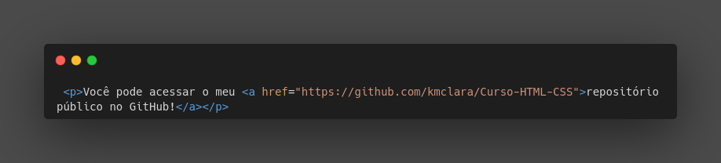

<!DOCTYPE html>
<html lang="pt-br">
<head>
    <meta charset="UTF-8">
    <meta http-equiv="X-UA-Compatible" content="IE=edge">
    <meta name="viewport" content="width=device-width, initial-scale=1.0">
    <title>Links e Âncoras</title>
    <link rel="shortcut icon" href="images/Icons8-Ios7-Messaging-Link.ico" type="image/x-icon">
</head>
<body>
    <h1>Usando links externos! &#1F517</h1>
    <p>Link externo é um link que apontará para outro site que não seja o nosso.</p>
    <p>Exemplo de como usar:</p>
    <p>Você pode acessar o meu <a href="https://github.com/kmclara/Curso-HTML-CSS">repositório público no GitHub!</a></p>
    <p>Dê uma olhadinha no código: &#1F440</p>
    
    <p>Porém, se deixarmos que o link sobreponha o nosso site ao abri-lo, corre risco de o visitante não querer mais voltar ao nosso site. Dessa forma, fazemos o seguinte:</p>
    <p>Usamos o target - que quer dizer alvo - _blank - que quer dizer uma janela em branco. Podemos usar o rel="exeternal" que quer dizer que o link é do tipo externo. </p>
    <p>Exemplo:</p>
    <p>Você pode acessar o meu <a href="https://github.com/kmclara/Curso-HTML-CSS" target="_blank" rel="external">repositório público no GitHub! </a></p>
    <p>Ao clicarmos agora, o link que colocamos não irá sobrepor o nosso site, ele irá abrir outra página.</p>

</body>
</html>